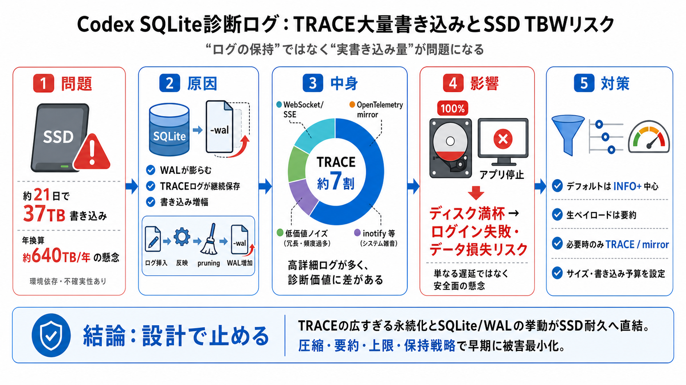

保存の粒度
TRACEの削減 / INFO+中心（デフォルト）

診断ログ × 書き込み
CodexのSQLiteフィードバック（診断）ログが、TRACEを含む詳細レベルで継続的に永続化され、SSDのTBW（書き込み耐久）を短期間で消費し得る—という懸念がGitHub issueで示されています。
現象の核
観測では約21日稼働でSSDに約37TB書き込み、年換算で約640TB/年規模という見立てもあり、一般的なTBW（例：600TBW級）に届く可能性が問題視されています。
なぜ増える？
SQLiteはWALモードで高速化しますが、ログ量が多いと-walファイルが膨らみやすくなります。さらに、保持行数だけでは実書き込み量（書き込み増幅）を見誤り得ます。
内訳が示唆
保持データの約7割がTRACEで、対象はWebSocket/SSEやOpenTelemetry（codex_otel.*）のミラー系、加えて内部ライブラリ由来の低価値ログ（hyper_util / toki-tungstenite系、inotifyノイズなど）が多いと分析されています。
“保持”と“書き込み”
例として、短い時間窓で挿入行数が増えてもretained rowsが頭打ちになると、挿入→反映→プルーニングの過程で内部更新が発生し、結果としてWAL書き込みが増える可能性が示唆されます。
最悪の副作用
ディスクが満杯になればログイン失敗などの深刻な副作用があり得ます。単なる遅さではなく、アプリの根幹動作を阻害する安全面の懸念として扱われています。
方向性
機能（フィードバックログ）自体は維持しつつ、SQLiteへ保存するデフォルトフィルタを狭めます。TRACEの全対象常時保存をやめ、INFO+中心へ落とす方針が議論されています。
抑える手
WebSocket/SSEの生ペイロードをデフォルト保存せずサマリ化、ミラーイベントは必要時のみ保存、さらにグローバルなサイズ/書き込み上限（予算）を設ける案が挙げられています。
価値の落差
TRACEを常時落とすと、再現解析に必要な詳細が不足するトレードオフが起きます。理想は「常時TRACE停止」だけでなく、必要時に詳細へ切替できる設定（kill-switch/オン/サンプリング/サイズ予算）です。
応急処置
暫定回避策として、WALの抑制・ログ/ファイル削除・Codexプロセス強制終了を組み合わせるスクリプトが提示されました。ただし停止中の損失や失敗リスクがあり、緊急回避の位置付けです。
疑うポイント
年換算（約640TB/年）は観測環境依存で、OSキャッシュや他プロセス、ログ以外のファイル操作の影響をどれだけ排除できたかは不明です。書き込み増幅の起点や最大サイズ/保持ルールが詳細化されるほど、優先度再評価できます。
結論
本件は“ログが多い”だけでなく、TRACEの広すぎる永続化とSQLite/WALの挙動が、SSD耐久というハード制約へ直結し得る点が強い根拠です。優先度は高く、ログ圧縮・要約・上限・保持戦略まで含めた早期の被害最小化が望まれます。
No references found